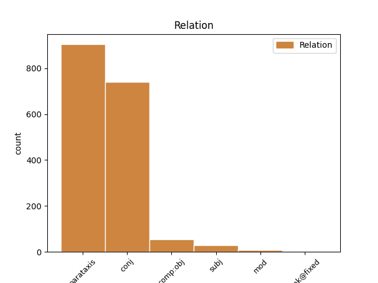
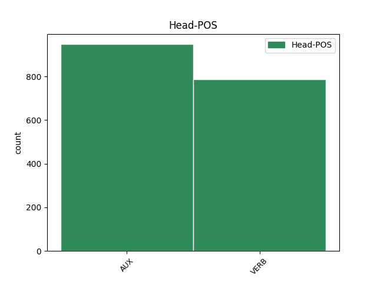
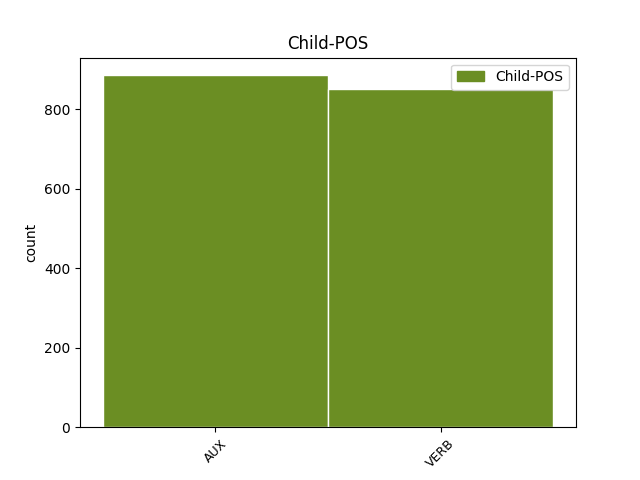

Distribution of features within this leaf



Agreement Rules sorted by frequency.
- When the dependent token is the parataxis(parataxis) of the head token, and the head token is AUX and the dependent token is AUX.
1 Njegova _ _ _ _ 0 _ _ _
2 slikarska _ _ _ _ 0 _ _ _
3 ustvarjalnost _ _ _ _ 0 _ _ _
4 je biti AUX Va-r3s-n Mood=Ind|Number=Sing|Person=3|Polarity=Pos|Tense=Pres|VerbForm=Fin 0 _ _ _
5 v _ _ _ _ 0 _ _ _
6 primerjavi _ _ _ _ 0 _ _ _
7 s _ _ _ _ 0 _ _ _
8 kakim _ _ _ _ 0 _ _ _
9 Rafaelom _ _ _ _ 0 _ _ _
10 izrazito _ _ _ _ 0 _ _ _
11 borna _ _ _ _ 0 _ _ _
12 : _ _ _ _ 0 _ _ _
13 zapustil _ _ _ _ 0 _ _ _
14 je biti AUX Va-r3s-n Mood=Ind|Number=Sing|Person=3|Polarity=Pos|Tense=Pres|VerbForm=Fin 4 parataxis _ Dep=13|Rel=PPart
15 samo _ _ _ _ 0 _ _ _
16 kakih _ _ _ _ 0 _ _ _
17 petnajst _ _ _ _ 0 _ _ _
18 slik _ _ _ _ 0 _ _ _
19 od _ _ _ _ 0 _ _ _
20 tistih _ _ _ _ 0 _ _ _
21 tridesetih _ _ _ _ 0 _ _ _
22 , _ _ _ _ 0 _ _ _
23 ki _ _ _ _ 0 _ _ _
24 jih _ _ _ _ 0 _ _ _
25 je _ _ _ _ 0 _ _ _
26 bil _ _ _ _ 0 _ _ _
27 v _ _ _ _ 0 _ _ _
28 tem _ _ _ _ 0 _ _ _
29 obdobju _ _ _ _ 0 _ _ _
30 ustvaril _ _ _ _ 0 _ _ _
31 ali _ _ _ _ 0 _ _ _
32 zastavil _ _ _ _ 0 _ _ _
33 . _ _ _ _ 0 _ _ _
1 Program _ _ _ _ 0 _ _ _
2 cpio _ _ _ _ 0 _ _ _
3 obnovi obnoviti VERB Vmer3s Aspect=Perf|Mood=Ind|Number=Sing|Person=3|Tense=Pres|VerbForm=Fin 0 _ _ _
4 imenik _ _ _ _ 0 _ _ _
5 in _ _ _ _ 0 _ _ _
6 na _ _ _ _ 0 _ _ _
7 koncu _ _ _ _ 0 _ _ _
8 izpiše izpisati VERB Vmer3s Aspect=Perf|Mood=Ind|Number=Sing|Person=3|Tense=Pres|VerbForm=Fin 3 conj _ Dep=0|Rel=Root
9 število _ _ _ _ 0 _ _ _
10 512 _ _ _ _ 0 _ _ _
11 - _ _ _ _ 0 _ _ _
12 znakovnih _ _ _ _ 0 _ _ _
13 blokov _ _ _ _ 0 _ _ _
14 , _ _ _ _ 0 _ _ _
15 ki _ _ _ _ 0 _ _ _
16 so _ _ _ _ 0 _ _ _
17 bili _ _ _ _ 0 _ _ _
18 zapisani _ _ _ _ 0 _ _ _
19 na _ _ _ _ 0 _ _ _
20 trdi _ _ _ _ 0 _ _ _
21 disk _ _ _ _ 0 _ _ _
22 . _ _ _ _ 0 _ _ _
1 Kraljičino _ _ _ _ 0 _ _ _
2 zaničevanje _ _ _ _ 0 _ _ _
3 je biti AUX Va-r3s-n Mood=Ind|Number=Sing|Person=3|Polarity=Pos|Tense=Pres|VerbForm=Fin 0 _ _ _
4 kardinala _ _ _ _ 0 _ _ _
5 Rohana _ _ _ _ 0 _ _ _
6 zelo _ _ _ _ 0 _ _ _
7 bolelo _ _ _ _ 0 _ _ _
8 , _ _ _ _ 0 _ _ _
9 zato _ _ _ _ 0 _ _ _
10 je biti AUX Va-r3s-n Mood=Ind|Number=Sing|Person=3|Polarity=Pos|Tense=Pres|VerbForm=Fin 3 conj _ Dep=12|Rel=PPart
11 dolgo _ _ _ _ 0 _ _ _
12 razmišljal _ _ _ _ 0 _ _ _
13 , _ _ _ _ 0 _ _ _
14 kako _ _ _ _ 0 _ _ _
15 bi _ _ _ _ 0 _ _ _
16 si _ _ _ _ 0 _ _ _
17 pridobil _ _ _ _ 0 _ _ _
18 njeno _ _ _ _ 0 _ _ _
19 milost _ _ _ _ 0 _ _ _
20 . _ _ _ _ 0 _ _ _
1 Prek _ _ _ _ 0 _ _ _
2 njih _ _ _ _ 0 _ _ _
3 lahko _ _ _ _ 0 _ _ _
4 nastavljamo nastavljati VERB Vmpr1p Aspect=Imp|Mood=Ind|Number=Plur|Person=1|Tense=Pres|VerbForm=Fin 0 _ _ _
5 osveževalne _ _ _ _ 0 _ _ _
6 frekvence _ _ _ _ 0 _ _ _
7 in _ _ _ _ 0 _ _ _
8 / _ _ _ _ 0 _ _ _
9 ali _ _ _ _ 0 _ _ _
10 tip _ _ _ _ 0 _ _ _
11 monitorja _ _ _ _ 0 _ _ _
12 , _ _ _ _ 0 _ _ _
13 izberemo izbrati VERB Vmer1p Aspect=Perf|Mood=Ind|Number=Plur|Person=1|Tense=Pres|VerbForm=Fin 4 parataxis _ Dep=0|Rel=Root
14 pa _ _ _ _ 0 _ _ _
15 lahko _ _ _ _ 0 _ _ _
16 tudi _ _ _ _ 0 _ _ _
17 strojno _ _ _ _ 0 _ _ _
18 povečavo _ _ _ _ 0 _ _ _
19 zaslona _ _ _ _ 0 _ _ _
20 . _ _ _ _ 0 _ _ _
1 KOČEVJE _ _ _ _ 0 _ _ _
2 Iz _ _ _ _ 0 _ _ _
3 Kočevja _ _ _ _ 0 _ _ _
4 proti _ _ _ _ 0 _ _ _
5 Ljubljani _ _ _ _ 0 _ _ _
6 v _ _ _ _ 0 _ _ _
7 prihodnje _ _ _ _ 0 _ _ _
8 ne _ _ _ _ 0 _ _ _
9 bodo biti AUX Va-f3p-n Mood=Ind|Number=Plur|Person=3|Polarity=Pos|Tense=Fut|VerbForm=Fin 0 _ _ _
10 vozili _ _ _ _ 0 _ _ _
11 zgolj _ _ _ _ 0 _ _ _
12 les _ _ _ _ 0 _ _ _
13 , _ _ _ _ 0 _ _ _
14 neprecenljivo _ _ _ _ 0 _ _ _
15 bogastvo _ _ _ _ 0 _ _ _
16 poraščene _ _ _ _ 0 _ _ _
17 pokrajine _ _ _ _ 0 _ _ _
18 tik _ _ _ _ 0 _ _ _
19 ob _ _ _ _ 0 _ _ _
20 hrvaški _ _ _ _ 0 _ _ _
21 meji _ _ _ _ 0 _ _ _
22 , _ _ _ _ 0 _ _ _
23 gneča _ _ _ _ 0 _ _ _
24 na _ _ _ _ 0 _ _ _
25 cesti _ _ _ _ 0 _ _ _
26 bo biti VERB Va-f3s-n Mood=Ind|Number=Sing|Person=3|Polarity=Pos|Tense=Fut|VerbForm=Fin 9 parataxis _ Dep=0|Rel=Root
27 tudi _ _ _ _ 0 _ _ _
28 zaradi _ _ _ _ 0 _ _ _
29 povečane _ _ _ _ 0 _ _ _
30 zmogljivosti _ _ _ _ 0 _ _ _
31 pri _ _ _ _ 0 _ _ _
32 proizvodnji _ _ _ _ 0 _ _ _
33 najbolj _ _ _ _ 0 _ _ _
34 znanih _ _ _ _ 0 _ _ _
35 slovenskih _ _ _ _ 0 _ _ _
36 sirov _ _ _ _ 0 _ _ _
37 . _ _ _ _ 0 _ _ _
1 Večjo _ _ _ _ 0 _ _ _
2 količino _ _ _ _ 0 _ _ _
3 pomnilnika _ _ _ _ 0 _ _ _
4 ima imeti VERB Vmpr3s-n Aspect=Imp|Mood=Ind|Number=Sing|Person=3|Polarity=Pos|Tense=Pres|VerbForm=Fin 0 _ _ _
5 grafična _ _ _ _ 0 _ _ _
6 kartica _ _ _ _ 0 _ _ _
7 , _ _ _ _ 0 _ _ _
8 večje _ _ _ _ 0 _ _ _
9 resolucije _ _ _ _ 0 _ _ _
10 barv _ _ _ _ 0 _ _ _
11 in _ _ _ _ 0 _ _ _
12 dimenzij _ _ _ _ 0 _ _ _
13 zaslona _ _ _ _ 0 _ _ _
14 je biti AUX Va-r3s-n Mood=Ind|Number=Sing|Person=3|Polarity=Pos|Tense=Pres|VerbForm=Fin 4 parataxis _ Dep=0|Rel=Root
15 sposobna _ _ _ _ 0 _ _ _
16 . _ _ _ _ 0 _ _ _
1 Odlično _ _ _ _ 0 _ _ _
2 je biti AUX Va-r3s-n Mood=Ind|Number=Sing|Person=3|Polarity=Pos|Tense=Pres|VerbForm=Fin 0 _ _ _
3 povezan _ _ _ _ 0 _ _ _
4 z _ _ _ _ 0 _ _ _
5 Microsoft _ _ _ _ 0 _ _ _
6 Office _ _ _ _ 0 _ _ _
7 95 _ _ _ _ 0 _ _ _
8 in _ _ _ _ 0 _ _ _
9 podpira podpirati VERB Vmpr3s Aspect=Imp|Mood=Ind|Number=Sing|Person=3|Tense=Pres|VerbForm=Fin 2 conj _ Dep=0|Rel=Root
10 OLE _ _ _ _ 0 _ _ _
11 2.0 _ _ _ _ 0 _ _ _
12 . _ _ _ _ 0 _ _ _
1 Postalo _ _ _ _ 0 _ _ _
2 me _ _ _ _ 0 _ _ _
3 je _ _ _ _ 0 _ _ _
4 malo _ _ _ _ 0 _ _ _
5 sram _ _ _ _ 0 _ _ _
6 , _ _ _ _ 0 _ _ _
7 da _ _ _ _ 0 _ _ _
8 tako _ _ _ _ 0 _ _ _
9 govorim govoriti VERB Vmpr1s Aspect=Imp|Mood=Ind|Number=Sing|Person=1|Tense=Pres|VerbForm=Fin 0 _ _ _
10 , _ _ _ _ 0 _ _ _
11 vendar _ _ _ _ 0 _ _ _
12 se _ _ _ _ 0 _ _ _
13 nisem biti AUX Va-r1s-y Mood=Ind|Number=Sing|Person=1|Polarity=Neg|Tense=Pres|VerbForm=Fin 9 conj _ Dep=14|Rel=PPart
14 mogla _ _ _ _ 0 _ _ _
15 zadržati _ _ _ _ 0 _ _ _
16 . _ _ _ _ 0 _ _ _
1 Koristno _ _ _ _ 0 _ _ _
2 je _ _ _ _ 0 _ _ _
3 , _ _ _ _ 0 _ _ _
4 če _ _ _ _ 0 _ _ _
5 pred _ _ _ _ 0 _ _ _
6 nakupom _ _ _ _ 0 _ _ _
7 vsaj _ _ _ _ 0 _ _ _
8 vemo vedeti VERB Vmpr1p Aspect=Imp|Mood=Ind|Number=Plur|Person=1|Tense=Pres|VerbForm=Fin 0 _ _ _
9 , _ _ _ _ 0 _ _ _
10 kaj _ _ _ _ 0 _ _ _
11 te _ _ _ _ 0 _ _ _
12 vrednosti _ _ _ _ 0 _ _ _
13 pomenijo pomeniti VERB Vmbr3p Mood=Ind|Number=Plur|Person=3|Tense=Pres|VerbForm=Fin 8 comp:obj _ Dep=8|Rel=Obj|SpaceAfter=No
14 , _ _ _ _ 0 _ _ _
15 drugače _ _ _ _ 0 _ _ _
16 se _ _ _ _ 0 _ _ _
17 bo _ _ _ _ 0 _ _ _
18 hitro _ _ _ _ 0 _ _ _
19 zgodilo _ _ _ _ 0 _ _ _
20 , _ _ _ _ 0 _ _ _
21 da _ _ _ _ 0 _ _ _
22 bomo _ _ _ _ 0 _ _ _
23 računalnik _ _ _ _ 0 _ _ _
24 ali _ _ _ _ 0 _ _ _
25 katerega _ _ _ _ 0 _ _ _
26 izmed _ _ _ _ 0 _ _ _
27 njegovih _ _ _ _ 0 _ _ _
28 delov _ _ _ _ 0 _ _ _
29 preplačali _ _ _ _ 0 _ _ _
30 . _ _ _ _ 0 _ _ _
1 Sprašujem spraševati VERB Vmpr1s Aspect=Imp|Mood=Ind|Number=Sing|Person=1|Tense=Pres|VerbForm=Fin 0 _ _ _
2 se _ _ _ _ 0 _ _ _
3 , _ _ _ _ 0 _ _ _
4 zakaj _ _ _ _ 0 _ _ _
5 niste biti AUX Va-r2p-y Mood=Ind|Number=Plur|Person=2|Polarity=Neg|Tense=Pres|VerbForm=Fin 1 comp:obj _ Dep=7|Rel=PPart
6 postopka _ _ _ _ 0 _ _ _
7 izpeljali _ _ _ _ 0 _ _ _
8 že _ _ _ _ 0 _ _ _
9 na _ _ _ _ 0 _ _ _
10 seji _ _ _ _ 0 _ _ _
11 v _ _ _ _ 0 _ _ _
12 začetku _ _ _ _ 0 _ _ _
13 julija _ _ _ _ 0 _ _ _
14 in _ _ _ _ 0 _ _ _
15 bi _ _ _ _ 0 _ _ _
16 danes _ _ _ _ 0 _ _ _
17 že _ _ _ _ 0 _ _ _
18 imeli _ _ _ _ 0 _ _ _
19 nadomestnega _ _ _ _ 0 _ _ _
20 svetnika _ _ _ _ 0 _ _ _
21 , _ _ _ _ 0 _ _ _
22 je _ _ _ _ 0 _ _ _
23 dejal _ _ _ _ 0 _ _ _
24 svetnik _ _ _ _ 0 _ _ _
25 Branko _ _ _ _ 0 _ _ _
26 Grims _ _ _ _ 0 _ _ _
27 in _ _ _ _ 0 _ _ _
28 opozoril _ _ _ _ 0 _ _ _
29 , _ _ _ _ 0 _ _ _
30 da _ _ _ _ 0 _ _ _
31 je _ _ _ _ 0 _ _ _
32 bilo _ _ _ _ 0 _ _ _
33 za _ _ _ _ 0 _ _ _
34 normalen _ _ _ _ 0 _ _ _
35 postopek _ _ _ _ 0 _ _ _
36 dovolj _ _ _ _ 0 _ _ _
37 časa _ _ _ _ 0 _ _ _
38 . _ _ _ _ 0 _ _ _
1 Pismo _ _ _ _ 0 _ _ _
2 o _ _ _ _ 0 _ _ _
3 nameri _ _ _ _ 0 _ _ _
4 v _ _ _ _ 0 _ _ _
5 teh _ _ _ _ 0 _ _ _
6 dneh _ _ _ _ 0 _ _ _
7 kroži _ _ _ _ 0 _ _ _
8 po _ _ _ _ 0 _ _ _
9 občinskih _ _ _ _ 0 _ _ _
10 svetih _ _ _ _ 0 _ _ _
11 , _ _ _ _ 0 _ _ _
12 z _ _ _ _ 0 _ _ _
13 njim _ _ _ _ 0 _ _ _
14 pa _ _ _ _ 0 _ _ _
15 bo biti AUX Va-f3s-n Mood=Ind|Number=Sing|Person=3|Polarity=Pos|Tense=Fut|VerbForm=Fin 0 _ _ _
16 postalo _ _ _ _ 0 _ _ _
17 jasno _ _ _ _ 0 _ _ _
18 , _ _ _ _ 0 _ _ _
19 kdo _ _ _ _ 0 _ _ _
20 vse _ _ _ _ 0 _ _ _
21 se _ _ _ _ 0 _ _ _
22 bo biti AUX Va-f3s-n Mood=Ind|Number=Sing|Person=3|Polarity=Pos|Tense=Fut|VerbForm=Fin 15 subj _ Dep=23|Rel=PPart
23 vključil _ _ _ _ 0 _ _ _
24 v _ _ _ _ 0 _ _ _
25 projekt _ _ _ _ 0 _ _ _
26 . _ _ _ _ 0 _ _ _
1 Zanima zanimati VERB Vmpr3s Aspect=Imp|Mood=Ind|Number=Sing|Person=3|Tense=Pres|VerbForm=Fin 0 _ _ _
2 me _ _ _ _ 0 _ _ _
3 , _ _ _ _ 0 _ _ _
4 zakaj _ _ _ _ 0 _ _ _
5 moški _ _ _ _ 0 _ _ _
6 hranijo hraniti VERB Vmpr3p Aspect=Imp|Mood=Ind|Number=Plur|Person=3|Tense=Pres|VerbForm=Fin 1 subj _ Dep=1|Rel=Sb
7 Playboye _ _ _ _ 0 _ _ _
8 ? _ _ _ _ 0 _ _ _
1 Ni biti AUX Va-r3s-y Mood=Ind|Number=Sing|Person=3|Polarity=Neg|Tense=Pres|VerbForm=Fin 0 _ _ _
2 mi _ _ _ _ 0 _ _ _
3 jasno _ _ _ _ 0 _ _ _
4 , _ _ _ _ 0 _ _ _
5 na _ _ _ _ 0 _ _ _
6 kaj _ _ _ _ 0 _ _ _
7 pamfletist _ _ _ _ 0 _ _ _
8 namiguje namigovati VERB Vmpr3s Aspect=Imp|Mood=Ind|Number=Sing|Person=3|Tense=Pres|VerbForm=Fin 1 subj _ Dep=1|Rel=Sb|SpaceAfter=No
9 , _ _ _ _ 0 _ _ _
10 ko _ _ _ _ 0 _ _ _
11 govori _ _ _ _ 0 _ _ _
12 o _ _ _ _ 0 _ _ _
13 » _ _ _ _ 0 _ _ _
14 novi _ _ _ _ 0 _ _ _
15 Ninamedii _ _ _ _ 0 _ _ _
16 « _ _ _ _ 0 _ _ _
17 . _ _ _ _ 0 _ _ _
1 Kadarkoli _ _ _ _ 0 _ _ _
2 je biti AUX Va-r3s-n Mood=Ind|Number=Sing|Person=3|Polarity=Pos|Tense=Pres|VerbForm=Fin 16 mod _ Dep=3|Rel=PPart
3 prišlo _ _ _ _ 0 _ _ _
4 do _ _ _ _ 0 _ _ _
5 bojev _ _ _ _ 0 _ _ _
6 , _ _ _ _ 0 _ _ _
7 ki _ _ _ _ 0 _ _ _
8 bi _ _ _ _ 0 _ _ _
9 se _ _ _ _ 0 _ _ _
10 utegnili _ _ _ _ 0 _ _ _
11 razviti _ _ _ _ 0 _ _ _
12 v _ _ _ _ 0 _ _ _
13 pokol _ _ _ _ 0 _ _ _
14 ljudstva _ _ _ _ 0 _ _ _
15 , _ _ _ _ 0 _ _ _
16 smo biti AUX Va-r1p-n Mood=Ind|Number=Plur|Person=1|Polarity=Pos|Tense=Pres|VerbForm=Fin 0 _ _ _
17 po _ _ _ _ 0 _ _ _
18 odločitvah _ _ _ _ 0 _ _ _
19 predsedstva _ _ _ _ 0 _ _ _
20 reagirali _ _ _ _ 0 _ _ _
21 . _ _ _ _ 0 _ _ _
1 Lohk _ _ _ _ 0 _ _ _
2 mi _ _ _ _ 0 _ _ _
3 rečeš _ _ _ _ 0 _ _ _
4 drkač _ _ _ _ 0 _ _ _
5 , _ _ _ _ 0 _ _ _
6 sam _ _ _ _ 0 _ _ _
7 sem biti AUX Va-r1s-n Mood=Ind|Number=Sing|Person=1|Polarity=Pos|Tense=Pres|VerbForm=Fin 0 _ _ _
8 bil _ _ _ _ 0 _ _ _
9 zmer _ _ _ _ 0 _ _ _
10 mal _ _ _ _ 0 _ _ _
11 živčen _ _ _ _ 0 _ _ _
12 , _ _ _ _ 0 _ _ _
13 kar _ _ _ _ 0 _ _ _
14 se _ _ _ _ 0 _ _ _
15 drog _ _ _ _ 0 _ _ _
16 tiče tikati VERB Vmpr3s Aspect=Imp|Mood=Ind|Number=Sing|Person=3|Tense=Pres|VerbForm=Fin 7 mod _ Dep=8|Rel=AdvO|SpaceAfter=No
17 . _ _ _ _ 0 _ _ _
1 Kar _ _ _ _ 0 _ _ _
2 je biti AUX Va-r3s-n Mood=Ind|Number=Sing|Person=3|Polarity=Pos|Tense=Pres|VerbForm=Fin 7 subj _ Dep=7|Rel=Sb
3 videti _ _ _ _ 0 _ _ _
4 navzven _ _ _ _ 0 _ _ _
5 predano _ _ _ _ 0 _ _ _
6 , _ _ _ _ 0 _ _ _
7 je biti VERB Va-r3s-n Mood=Ind|Number=Sing|Person=3|Polarity=Pos|Tense=Pres|VerbForm=Fin 0 _ _ _
8 v _ _ _ _ 0 _ _ _
9 resnici _ _ _ _ 0 _ _ _
10 vam _ _ _ _ 0 _ _ _
11 v _ _ _ _ 0 _ _ _
12 korist _ _ _ _ 0 _ _ _
13 , _ _ _ _ 0 _ _ _
14 saj _ _ _ _ 0 _ _ _
15 pridobite _ _ _ _ 0 _ _ _
16 . _ _ _ _ 0 _ _ _
1 Vidim videti VERB Vmbr1s Mood=Ind|Number=Sing|Person=1|Tense=Pres|VerbForm=Fin 0 _ _ _
2 te _ _ _ _ 0 _ _ _
3 v _ _ _ _ 0 _ _ _
4 majici _ _ _ _ 0 _ _ _
5 , _ _ _ _ 0 _ _ _
6 ki _ _ _ _ 0 _ _ _
7 je _ _ _ _ 0 _ _ _
8 bela _ _ _ _ 0 _ _ _
9 le _ _ _ _ 0 _ _ _
10 od _ _ _ _ 0 _ _ _
11 daleč _ _ _ _ 0 _ _ _
12 , _ _ _ _ 0 _ _ _
13 tako _ _ _ _ 0 _ _ _
14 kot _ _ _ _ 0 _ _ _
15 je _ _ _ _ 0 _ _ _
16 čist _ _ _ _ 0 _ _ _
17 in _ _ _ _ 0 _ _ _
18 lep _ _ _ _ 0 _ _ _
19 le _ _ _ _ 0 _ _ _
20 oddaljeni _ _ _ _ 0 _ _ _
21 spomin _ _ _ _ 0 _ _ _
22 , _ _ _ _ 0 _ _ _
23 kako _ _ _ _ 0 _ _ _
24 se _ _ _ _ 0 _ _ _
25 počasi _ _ _ _ 0 _ _ _
26 sprehajaš sprehajati VERB Vmpr2s Aspect=Imp|Mood=Ind|Number=Sing|Person=2|Tense=Pres|VerbForm=Fin 1 mod _ Dep=1|Rel=AdvM
27 z _ _ _ _ 0 _ _ _
28 rokami _ _ _ _ 0 _ _ _
29 na _ _ _ _ 0 _ _ _
30 križu _ _ _ _ 0 _ _ _
31 , _ _ _ _ 0 _ _ _
32 po _ _ _ _ 0 _ _ _
33 edini _ _ _ _ 0 _ _ _
34 cesti _ _ _ _ 0 _ _ _
35 skozi _ _ _ _ 0 _ _ _
36 vas _ _ _ _ 0 _ _ _
37 . _ _ _ _ 0 _ _ _
1 Hočeš hoteti VERB Vmpr2s-n Aspect=Imp|Mood=Ind|Number=Sing|Person=2|Polarity=Pos|Tense=Pres|VerbForm=Fin 0 _ _ _
2 nočeš hoteti VERB Vmpr2s-y Aspect=Imp|Mood=Ind|Number=Sing|Person=2|Polarity=Neg|Tense=Pres|VerbForm=Fin 1 unk@fixed _ Dep=1|Rel=MWU
3 sta _ _ _ _ 0 _ _ _
4 jo _ _ _ _ 0 _ _ _
5 puntarja _ _ _ _ 0 _ _ _
6 ubrala _ _ _ _ 0 _ _ _
7 zraven _ _ _ _ 0 _ _ _
8 in _ _ _ _ 0 _ _ _
9 kobilice _ _ _ _ 0 _ _ _
10 so _ _ _ _ 0 _ _ _
11 v _ _ _ _ 0 _ _ _
12 diru _ _ _ _ 0 _ _ _
13 odskakljale _ _ _ _ 0 _ _ _
14 proti _ _ _ _ 0 _ _ _
15 svojemu _ _ _ _ 0 _ _ _
16 plenišču _ _ _ _ 0 _ _ _
17 . _ _ _ _ 0 _ _ _
Disagree Examples:
1 Gre iti VERB Vmbr3s Mood=Ind|Number=Sing|Person=3|Tense=Pres|VerbForm=Fin 0 _ _ _
2 za _ _ _ _ 0 _ _ _
3 vozilo _ _ _ _ 0 _ _ _
4 , _ _ _ _ 0 _ _ _
5 ki _ _ _ _ 0 _ _ _
6 bo _ _ _ _ 0 _ _ _
7 kupcem _ _ _ _ 0 _ _ _
8 na _ _ _ _ 0 _ _ _
9 voljo _ _ _ _ 0 _ _ _
10 za _ _ _ _ 0 _ _ _
11 več _ _ _ _ 0 _ _ _
12 namenov _ _ _ _ 0 _ _ _
13 , _ _ _ _ 0 _ _ _
14 hkrati _ _ _ _ 0 _ _ _
15 pa _ _ _ _ 0 _ _ _
16 bo biti AUX Va-f3s-n Mood=Ind|Number=Sing|Person=3|Polarity=Pos|Tense=Fut|VerbForm=Fin 1 parataxis _ Dep=0|Rel=Root
17 lahkotno _ _ _ _ 0 _ _ _
18 za _ _ _ _ 0 _ _ _
19 vožnjo _ _ _ _ 0 _ _ _
20 . _ _ _ _ 0 _ _ _
1 Tam _ _ _ _ 0 _ _ _
2 so biti AUX Va-r3p-n Mood=Ind|Number=Plur|Person=3|Polarity=Pos|Tense=Pres|VerbForm=Fin 0 _ _ _
3 samo _ _ _ _ 0 _ _ _
4 zamahnili _ _ _ _ 0 _ _ _
5 z _ _ _ _ 0 _ _ _
6 roko _ _ _ _ 0 _ _ _
7 , _ _ _ _ 0 _ _ _
8 češ _ _ _ _ 0 _ _ _
9 , _ _ _ _ 0 _ _ _
10 se _ _ _ _ 0 _ _ _
11 bo biti AUX Va-f3s-n Mood=Ind|Number=Sing|Person=3|Polarity=Pos|Tense=Fut|VerbForm=Fin 2 parataxis _ Dep=13|Rel=PPart
12 že _ _ _ _ 0 _ _ _
13 vrnila _ _ _ _ 0 _ _ _
14 . _ _ _ _ 0 _ _ _
1 Sedaj _ _ _ _ 0 _ _ _
2 je biti AUX Va-r3s-n Mood=Ind|Number=Sing|Person=3|Polarity=Pos|Tense=Pres|VerbForm=Fin 0 _ _ _
3 že _ _ _ _ 0 _ _ _
4 dokončno _ _ _ _ 0 _ _ _
5 znano _ _ _ _ 0 _ _ _
6 , _ _ _ _ 0 _ _ _
7 da _ _ _ _ 0 _ _ _
8 v _ _ _ _ 0 _ _ _
9 nadaljevanju _ _ _ _ 0 _ _ _
10 prvenstva _ _ _ _ 0 _ _ _
11 v _ _ _ _ 0 _ _ _
12 vratih _ _ _ _ 0 _ _ _
13 ne _ _ _ _ 0 _ _ _
14 bo _ _ _ _ 0 _ _ _
15 več _ _ _ _ 0 _ _ _
16 Pejkoviča _ _ _ _ 0 _ _ _
17 - _ _ _ _ 0 _ _ _
18 če _ _ _ _ 0 _ _ _
19 bo _ _ _ _ 0 _ _ _
20 vse _ _ _ _ 0 _ _ _
21 po _ _ _ _ 0 _ _ _
22 sreči _ _ _ _ 0 _ _ _
23 , _ _ _ _ 0 _ _ _
24 ga _ _ _ _ 0 _ _ _
25 bo biti AUX Va-f3s-n Mood=Ind|Number=Sing|Person=3|Polarity=Pos|Tense=Fut|VerbForm=Fin 2 parataxis _ Dep=26|Rel=PPart
26 zamenjal _ _ _ _ 0 _ _ _
27 Magič _ _ _ _ 0 _ _ _
28 , _ _ _ _ 0 _ _ _
29 ki _ _ _ _ 0 _ _ _
30 trenutno _ _ _ _ 0 _ _ _
31 brani _ _ _ _ 0 _ _ _
32 v _ _ _ _ 0 _ _ _
33 Avstriji _ _ _ _ 0 _ _ _
34 - _ _ _ _ 0 _ _ _
35 in _ _ _ _ 0 _ _ _
36 igralca _ _ _ _ 0 _ _ _
37 sredine _ _ _ _ 0 _ _ _
38 Šalje _ _ _ _ 0 _ _ _
39 , _ _ _ _ 0 _ _ _
40 medtem _ _ _ _ 0 _ _ _
41 ko _ _ _ _ 0 _ _ _
42 se _ _ _ _ 0 _ _ _
43 v _ _ _ _ 0 _ _ _
44 Kočevje _ _ _ _ 0 _ _ _
45 vrača _ _ _ _ 0 _ _ _
46 Merdanovič _ _ _ _ 0 _ _ _
47 in _ _ _ _ 0 _ _ _
48 verjetno _ _ _ _ 0 _ _ _
49 tudi _ _ _ _ 0 _ _ _
50 Stojanovič _ _ _ _ 0 _ _ _
51 . _ _ _ _ 0 _ _ _
1 Več _ _ _ _ 0 _ _ _
2 bomo biti AUX Va-f1p-n Mood=Ind|Number=Plur|Person=1|Polarity=Pos|Tense=Fut|VerbForm=Fin 0 _ _ _
3 fotkali _ _ _ _ 0 _ _ _
4 in _ _ _ _ 0 _ _ _
5 posledično _ _ _ _ 0 _ _ _
6 tudi _ _ _ _ 0 _ _ _
7 več _ _ _ _ 0 _ _ _
8 tiskali _ _ _ _ 0 _ _ _
9 , _ _ _ _ 0 _ _ _
10 saj _ _ _ _ 0 _ _ _
11 je biti AUX Va-r3s-n Mood=Ind|Number=Sing|Person=3|Polarity=Pos|Tense=Pres|VerbForm=Fin 2 parataxis _ Dep=0|Rel=Root
12 že _ _ _ _ 0 _ _ _
13 vsak _ _ _ _ 0 _ _ _
14 drugi _ _ _ _ 0 _ _ _
15 mobilnik _ _ _ _ 0 _ _ _
16 opremljen _ _ _ _ 0 _ _ _
17 z _ _ _ _ 0 _ _ _
18 digitalno _ _ _ _ 0 _ _ _
19 kamero _ _ _ _ 0 _ _ _
20 . _ _ _ _ 0 _ _ _
1 To _ _ _ _ 0 _ _ _
2 storitev _ _ _ _ 0 _ _ _
3 bomo biti AUX Va-f1p-n Mood=Ind|Number=Plur|Person=1|Polarity=Pos|Tense=Fut|VerbForm=Fin 0 _ _ _
4 zato _ _ _ _ 0 _ _ _
5 opisali _ _ _ _ 0 _ _ _
6 takrat _ _ _ _ 0 _ _ _
7 , _ _ _ _ 0 _ _ _
8 ko _ _ _ _ 0 _ _ _
9 bo _ _ _ _ 0 _ _ _
10 zaživela _ _ _ _ 0 _ _ _
11 , _ _ _ _ 0 _ _ _
12 tokrat _ _ _ _ 0 _ _ _
13 naj _ _ _ _ 0 _ _ _
14 zadostuje zadostovati VERB Vmpr3s Aspect=Imp|Mood=Ind|Number=Sing|Person=3|Tense=Pres|VerbForm=Fin 3 parataxis _ Dep=0|Rel=Root|SpaceAfter=No
15 , _ _ _ _ 0 _ _ _
16 da _ _ _ _ 0 _ _ _
17 je _ _ _ _ 0 _ _ _
18 7270 _ _ _ _ 0 _ _ _
19 pripravljena _ _ _ _ 0 _ _ _
20 tudi _ _ _ _ 0 _ _ _
21 na _ _ _ _ 0 _ _ _
22 to _ _ _ _ 0 _ _ _
23 . _ _ _ _ 0 _ _ _